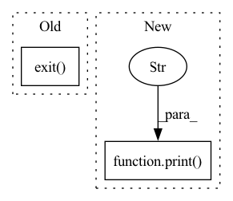

Pattern ID :3919
Before Change
else:
assert NotImplementedError
print("Scenario {} not exists in pettingzoo".format(args.map))
sys.exit()
// keep obs and action dim same across agents
// pad_action_space_v0 will auto mask the padding actions
env = ss.pad_observations_v0(env)After Change
verbose=1)
else:
print("args.run illegal" )
raise ValueError()
ray.shutdown()
In pattern: SUPERPATTERN
Frequency: 5
Non-data size: 2
Instances Fragment ID: 14792145
Project Name: replicable-marl/marllib
Commit Name: 9a2ffb363fb923afad2f3d9d9a450e7c8e3ec626
Time: 2021-12-24
Author: hhhusiyi@163.com
File Name: MPE/run_mpe_multi_trial.py
M Class Name: AnonimousClass
N Class Name: AnonimousClass
M Method Name: run_parallel(1)
N Method Name: run_parallel(1)
M Parent Class:
N Parent Class:
M File Name: MPE/run_mpe_multi_trial.py
N File Name: MPE/run_mpe_multi_trial.py
M Start Line: 72
M End Line: 129
N Start Line: 73
N End Line: 290
Before Change
def main():
if len(sys.argv) < 2:
print("choose between "index/search/dryrun" mode")
exit( 1)
config()
if sys.argv[1] == "index":
workspace = os.environ["JINA_WORKSPACE"]After Change
workspace = os.environ["JINA_WORKSPACE"]
if "index" in task:
if os.path.exists(workspace):
print(
f"\n +------------------------------------------------------------------------------------+ \
\n | 🤖🤖🤖 | \
\n | The directory {workspace} already exists. Please remove it before indexing again. | \
\n | 🤖🤖🤖 | \
\n +------------------------------------------------------------------------------------+"
)
sys.exit(1)
print(f"////// task = {task}")
if task == "index": Fragment ID: 14792144
Project Name: jina-ai/examples
Commit Name: b95c5445da01eb1375f8323ef4211ae040e00ba9
Time: 2021-04-25
Author: rutuja.r.surve@gmail.com
File Name: multires-lyrics-search/app.py
M Class Name: AnonimousClass
N Class Name: AnonimousClass
M Method Name: main(3)
N Method Name: main(0)
M Parent Class:
N Parent Class:
M File Name: multires-lyrics-search/app.py
N File Name: multires-lyrics-search/app.py
M Start Line: 65
M End Line: 84
N Start Line: 100
N End Line: 134
Before Change
"adversarial agents contained in this MPE scenario. "
"Not suitable for cooperative only algo {}".format(args.run)
)
sys.exit()
else:
print(
"PettingZooEnv step function only return one agent info, "
"not currently good for joint Q learning algo like QMIX/VDN"After Change
verbose=1)
else:
print("args.run illegal" )
raise ValueError()
ray.shutdown()
Fragment ID: 14792147
Project Name: replicable-marl/marllib
Commit Name: 9a2ffb363fb923afad2f3d9d9a450e7c8e3ec626
Time: 2021-12-24
Author: hhhusiyi@163.com
File Name: MPE/run_mpe.py
M Class Name: AnonimousClass
N Class Name: AnonimousClass
M Method Name: run(1)
N Method Name: run(1)
M Parent Class:
N Parent Class:
M File Name: MPE/run_mpe.py
N File Name: MPE/run_mpe.py
M Start Line: 70
M End Line: 126
N Start Line: 71
N End Line: 327
Before Change
dataset_dir = path
else: // in case of a remote dataset
print("Dataset Infos file saved at {}".format(dataset_infos_path))
exit( 1)
// Move datasetinfo back to the user
user_dataset_infos_path = os.path.join(dataset_dir, DATASET_INFOS_DICT_FILE_NAME)
copyfile(dataset_infos_path, user_dataset_infos_path)After Change
yield builder_cls(name=name, hash=hash, cache_dir=self._cache_dir, data_dir=self._data_dir)
for i, builder in enumerate(get_builders()):
print(f"Testing builder "{builder.config.name}" ({i + 1}/{n_builders})" )
builder.download_and_prepare(
download_mode=REUSE_CACHE_IF_EXISTS if not self._force_redownload else FORCE_REDOWNLOAD,
ignore_verifications=self._ignore_verifications,
try_from_hf_gcs=False, Fragment ID: 14792148
Project Name: huggingface/datasets
Commit Name: ab71f06d7e90034e38b203750e457a8bbd13054e
Time: 2020-11-18
Author: 42851186+lhoestq@users.noreply.github.com
File Name: src/datasets/commands/test.py
M Class Name: TestCommand
N Class Name: TestCommand
M Method Name: run(1)
N Method Name: run(1)
M Parent Class: BaseTransformersCLICommand
N Parent Class: BaseTransformersCLICommand
M File Name: src/datasets/commands/test.py
N File Name: src/datasets/commands/test.py
M Start Line: 79
M End Line: 119
N Start Line: 97
N End Line: 153
Before Change
self.wf = self.wf.eval()
pos = self.sample()
self.wf = self.wf.train()
exit()
//pos = torch.rand(self.sampler.nwalkers,self.wf.ndim*self.wf.nelec)
dataset = QMC_DataSet(pos)
dataloader = DataLoader(dataset,batch_size=self.batchsize)After Change
cumulative_loss.append(0)
for data in dataloader:
print("\n data " , data.shape)
data = Variable(data).float()
t0 = time.time()
out = self.wf(data) Fragment ID: 14792140
Project Name: nlesc-jcer/qmctorch
Commit Name: 3dd6974f914a3d22ee620c2359808489d7f573a0
Time: 2019-05-13
Author: nicolas.gm.renaud@gmail.com
File Name: pyCHAMP/solver/neural_net.py
M Class Name: NN4PYSCF
N Class Name: NN4PYSCF
M Method Name: train(2)
N Method Name: train(2)
M Parent Class: SOLVER_BASE
N Parent Class: SOLVER_BASE
M File Name: pyCHAMP/solver/neural_net.py
N File Name: pyCHAMP/solver/neural_net.py
M Start Line: 111
M End Line: 138
N Start Line: 117
N End Line: 136